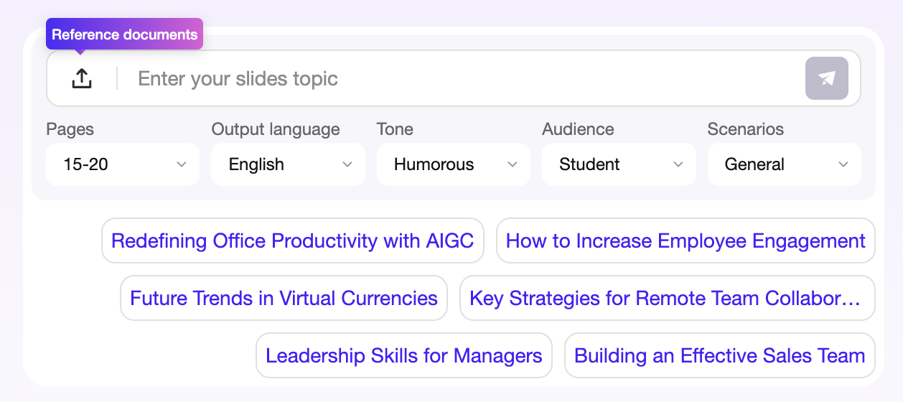
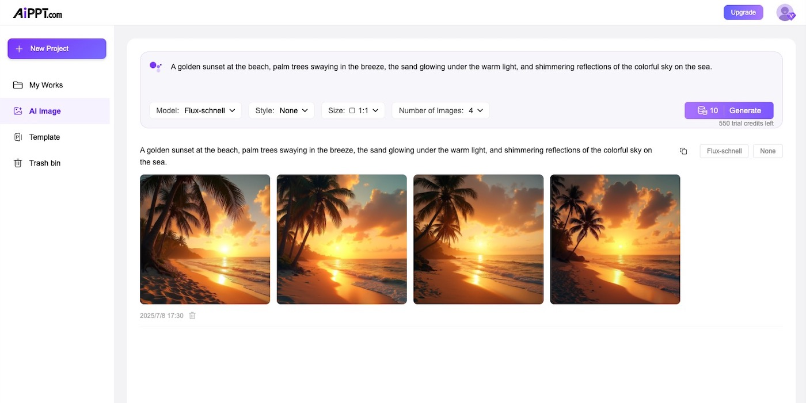

AiPPT 用了半年，哪些功能真的留在了我的工作流里
从最初的一键尝鲜到现在的深度依赖，这篇长期使用报告聊聊我对 AiPPT 各功能的真实去留判断，以及那些上手时没注意到的坑。
从 AiPPT官网 装它到现在正好半年。当初是冲着「AI 自动出 PPT」这个噱头装的，以为就是个点一下等两分钟的玩具。半年下来，有些功能成了我每天必开的生产力，有些功能碰都没再碰过。
从无视到必调：那排被我忽略了整整两周的下拉菜单
安装包从官方下载拿的，刚上手的时候，创建页面主题输入框下面那一排下拉设置我连看都没看——直接填主题、点生成，完事。生成出来的东西嘛，中规中矩，有时候页数多了、有时候结构乱了，我总觉得是「AI 就这样」。
直到第三次生成给客户的方案，出来的稿子语气太随意，客户那边的反馈是「不够正式」。我翻了一下发现，原来那排下拉里有语气、受众、场景三个选项——之前全是默认的「通用」。那次把语气改成「正式」、受众改成「客户」、场景改成「汇报」，再生成出来的稿子，措辞明显收了，章节结构也更贴合客户方案的节奏。
从那以后这十秒钟就没省过。六件套（页数、语言、语气、受众、场景、文本量）里，我最常用的是语气和文本量的组合——内部周会用「通用+精简+5-10 页」，课堂课件用「教学+中等+10-15 页」，给客户的方案是「正式+详实+15-20 页」。页数虽然说是区间，但配合大纲阶段调整，大部分时候能卡到预期。

现在的工作流里，这排设置是生成前必调的环节。说个反直觉的：调十秒设置，比生成完花半小时改稿子管用得多。
自定义模板打标：做好一次，终身受益
这是我半年来投入产出比最高的功能。
场景是这样的：公司每周都要做项目汇报，模板是固定的一套深色商务风。最开始每次生成都选官方模板，出来的东西配色和版式对不上，要手动改封面、改目录、调章节页的位置——一份稿子至少花二十分钟修版式。
后来尝试了自定义模板功能。核心就是「打标」——把公司模板的每一页告诉 AI 它是什么角色：主题页、目录页、章节页、内页、尾页，再设一下主题色。标对了，以后每次生成 AI 会自动把对应内容填进对应角色的位置。
打标本身需要动脑。我第一次标的时候犯了两个典型错误：一是深浅模式搞反了——目录页背景是深色的，但我选了浅色模式，结果生成出来的文字颜色全乱了；二是主题色漏设——做企业稿的时候，主题色决定了图表、强调色的配色，不设的话全是默认的蓝紫色，跟公司 VI 对不上。
我用了一份短稿 3-5 页的小主题做了验收，逐页核对封面标题位置、目录条数和章节数是否一致、内页正文有没有溢出，确认没问题之后保存了模板。现在每次生成直接选这套模板，版式一步到位，再也不用手动调位置了。
AI 图像：封面点睛够用，但别全稿都生成
AI Image 是 2025 年 7 月上线的功能，我从它刚出的时候就在用，到现在经历了 Flux、GPT Image 2、Nano Banana Pro 几轮模型迭代。
刚上线的时候只有 Flux，出图快但质感一般，适合批量试风格。后来 GPT Image 2 接进来，细节好很多，边缘干净、提示词理解准，用来生成封面主图挺合适。Nano Banana Pro 是 Google 系的主打，原生 4K，图里要加字的话（比如封面标题做进图里）选它准没错——它的中英文文字渲染是目前最强的。
但 AI 图像我只用来做封面和章节页。全稿图片都现场生成耗时太长，而且风格很难统一。更务实的组合是：模板自带图打底，关键两三页用 AI 图立住记忆点。提示词也有讲究——不说「科技感背景」这种抽象的，要说「深蓝渐变背景、抽象数据流线条、右侧留白」这种具体的画面元素，再补一句「演示文稿配图、构图简洁、留出文字区域」，出图可用率能提升一大截。

生成失败怎么破：烧额度的坑我替你踩过
这是我踩过最多的坑。
最开始碰到生成失败我就连点重试——结果免费额度烧了好几次，最后发现是 token 过期了，刷新页面重新登录就好了。后来又碰到过网络断续导致中途失败，换个稳定网络就没事。还有一次是文件字数超限，回到入口页重新处理了一下才解决。
总结下来，失败分三种情况：点生成没反应、中途失败、生成完了但结果不对。前两种要查登录态、额度、网络、文件；第三种其实不算故障，是预期管理问题——结构乱换专家画廊，文风不对换模型调语气，太长太短回大纲阶段删补章节，版式丑别重生成、直接整套换装。
说个纪律：反复失败超过三次，停下来换路径。 不要连点重试，实在拿不准可以去AiPPT文档翻一下排查手册，生成次数额度是消耗品，无脑重试烧的是自己的额度。
当初的判断哪些变了
刚上手的时候我高估了「一键生成」的威力，以为点一下就能出能用的稿子。半年下来发现，一键生成的东西能凑合看，但要用到正式场合，前面那十秒的设置和大纲阶段的调整，比后面花半小时改稿子省太多事。
同时我低估了自定义模板的长期价值。最开始觉得「我哪有那么多稿子要做同样的模板」，结果发现只要有固定场景（公司汇报、教学课件），模板做好一次，后面次次都省时间。
去留：不会卸载，什么情况下该换
半年下来，AiPPT 已经成了我固定场景下的首选工具。自定义模板让我每周的项目汇报从「半小时调版式」变成「直接生成就用」，设置六件套让生成结果跟预期对齐的概率从六成提到了九成。
但如果哪天免费额度进一步收紧、或者 AI 生成的内容质量明显下滑，我会考虑换。目前看还没到那一步——作为一个长期工具，它够稳。
这些 AiPPT 的使用资料我在 GitHub、Gitee 和 GitCode 三个平台都有收录，国内网络用 Gitee 或 GitCode 访问更顺畅。